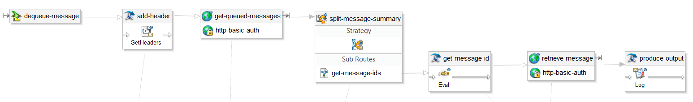

20 minutes with Workday Message Queues
Why
The workday integration bus is great and at what it does, but I get the impression that it was concieved with Workday as the center of the universe - if you're implementing Workday in a vacuum and all data flows in and out will be handled by primarily batch integrations managed from within Workday you're all set, but larger orgs that have an existing investment in Boomi or Biztalk or some other middleware, your choices were limited:
- Dispense with Workday integrations altogether and have your middleware connect to Workday web services directly. This is the most elegant option in theory but you often end up with a skills and communication gap during your implementation, since your middleware developer is most likely not familiar with Workday and its API, and most Workday consultants are unfamiliar with your third party middleware.
- Drop and consume files on an SFTP share as a sort of a demarcation between Workdays ESB and the organizations own middleware. This is what I currently see most often. Simple to implement, but adds delays and adds additional security, monitoring, & timing considerations.
- Use some of the more recently added real-time or near-real-time facilities; The listener service & message queues.
The listener service (which I may cover in another, shorter post) is elegant and easy to use but involves a certain loss of control; You're permitting an outside system that you may or may not trust to launch integrations whenever it sees fit. Your middleware developers may assure you that this on demand integration won't get launched more than a couple times a day but when a month or two after go-live you start seeing fifteen requests a minute and Workday slows to a crawl, your users are gonna look at you, not them. I guarantee it.
The recently introduced Message Queue facility provides a way to keep Workday as a pure consumer in your infrastructure while still allowing you to control the frequency with which your application runs. Workday doesn't have to poll or check any external system or share, but integrations can still run in batch mode on a schedule the Workday administrator dictates. Inbound data is stored in a queue and can be processed all at once when it's convenient (or if you like, outbound data can be queued and retrieved by an external system via a REST call.) Additionally, message queues are useful for reprocessing errors from a previous run when there's no natural place in Workday to store the error data.
What to do
The Community documentation and Studio sample are pretty good, and worth reading. I'm just here to provide a 20 minute summary and cover a few things that aren't explained so well.
The Workday message queue service is exposed to Studio and external systems via REST calls; retrieve queued messages with GET or DELETE (depending on whether you want to leave the messages in the queue after retrieval or not), PUT a queue URL (the base URL on your tenant's datacenter Community page + /ccx/wd-queue/[queue_name]) to create a new queue, POST to a queue to add a new message. Use an 'X-Tenant' custom header to specify your tenant and Basic HTTP Auth to authenticate.
Setup is fairly simple, but unfortunately (as far as I know) has to be done manually during migrations. The process is covered in more depth the sample project on Community, but the general process is as follows:
- Run your project in debug up to the enqueue-message step, or make a PUT call with cURL to create your queue
- Create a message queue security segment, and select your queue
- Create a segment based security group, and add your message queue security segment
- Add your integration security group to the segment based group you created above
There isn't much to discuss on the enqueue side, at least from Studio - use the enqueue-message mediation step, and specify the queue name. However, there's no equivalent dequeue-message step; To drain the queue, you'll need to do something like this:

- Use a set-headers step in a mediation to add the X-Tenant message header. you can use the builtin cc.customer.id property to access the current tenant name.
- A GET call to the 'fresh' operation on the message queue URL, with a maxMessages parameter big enough to acccomodate the largest realistic volume you might see (e.g. https://impl-cci.workday.com/ccx/wd-queue/WD_MQ_Demo/fresh?maxMessages=64000); This will retrieve a list of messages currently queued.
- An xpath/xml-stream splitter that will split your results along /messages/message. Note that the namespace for message queue results has consistently been http://www.workday.com/wd-queue/17 each time I've used it, but it probably wouldn't hurt to do some testing of your own. You also may want to set your splitters 'no split message error' to false and set a 'split until' expression to something like parts[0].xpath('/mq:messages/@total-count') == '0' to prevent an error if there are no results to dequeue.
- Inside the splitter sub-route, an eval statement similar to props['message_id'] = parts[0].xpath('/mq:message/mq:index') to get the ID of the current message.
- An http-out call to https://impl-cci.workday.com/ccx/wd-queue/WD_MQ_Demo/messages/@{props['message_id']} to retrieve the current message. Use DELETE if you'd like to remove the message after retrieval, or GET to leave it in place.
Maybe this goes without saying, but it's probably a good idea to store your base queue URL as an integration attribute and set the prod and non-prod URLS up in your tenant with environment restrictions, so that messages don't become comingled as you migrate to production, or as sandbox refreshes.
Also keep in mind that there's nothing like the Correlation ID that JMS has, or the custom attributes that you can create with Amazon SQS. My original plan for this tutorial was to show how to implement a parallel or serial convoy, but I'm still struggling to find an elegant way to do that.
Sample project is here. Hope this helps.
2016 @matthewrichen mrichen.github.io/wdlearn/